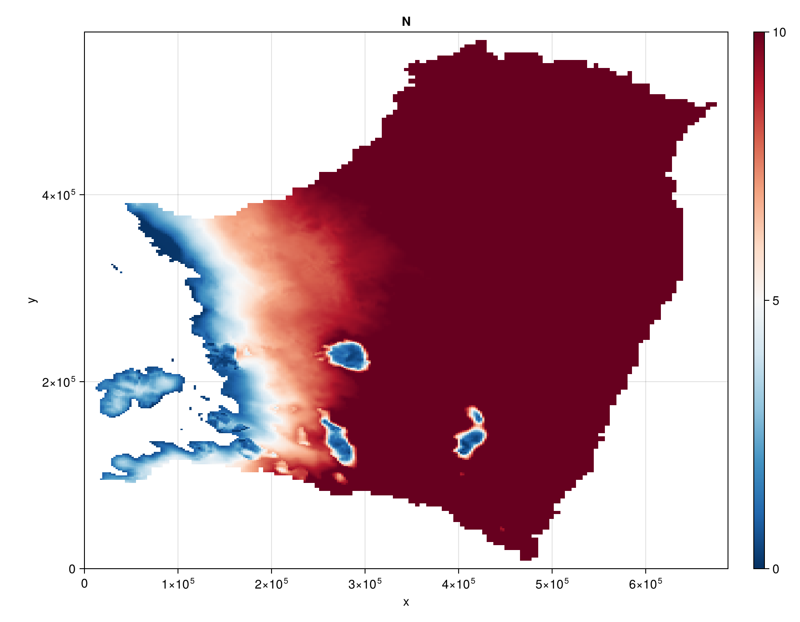

Height above buoyancy (HAB)
This is an example of how to run the FastHydrology.jl package for the steady state problem of the HAB model, described in Sec. 2.1.1 of Kazmierczak et al 2022 (https://doi.org/10.5194/tc-16-4537-2022).
The figure below comes from running this model on the same Thwaites Amundsen-sector dataset used in the Kazmierczak et al 2024 example.
Reproducing this figure
As in the Kazmierczak et al 2024 example, this needs THWAITES2km_m3_HAB_toto.mat placed at docs/src/examples/input/Kazmierczak2024/. Run the script below directly with julia (it is shown for reference only – the docs build does not execute it):
using FastHydrology
using CairoMakie
T = Float64
path = joinpath(@__DIR__, "input", "Kazmierczak2024", "THWAITES2km_m3_HAB_toto.mat")
Nx, Ny, xlims, ylims, mask, h, b, abs_v_b, A_visc, ṁ, κ = load_Kazmierczak(path)
# Prepare a grid using the Oceananigans rectilinear grid, and visualize it.
grid = OGRectHydroGrid(Nx, Ny, xlims, ylims; T = T)
fig = visualize_grid(grid)
# Build the model using the data from the input file above. The model holds its model-specific
# constants and fields, with the rest of the fields common to all models stored in the HydroState
# below.
model = HABHydroModel(grid)
state = HydroState(grid, mask, h, b)
sim = SteadyStateSimulation(model, grid, state)
run!(sim)
# Rescale for plotting.
state.N .*= 1e-6 # makes N [MPa]
state.N .= mask_field(state.N, state.mask, NaN)
fig_N = visualize_field(state.N; plot_title = "N", transpose_data = true, colorrange = (0, 10))Result
Effective pressure N [MPa]:
